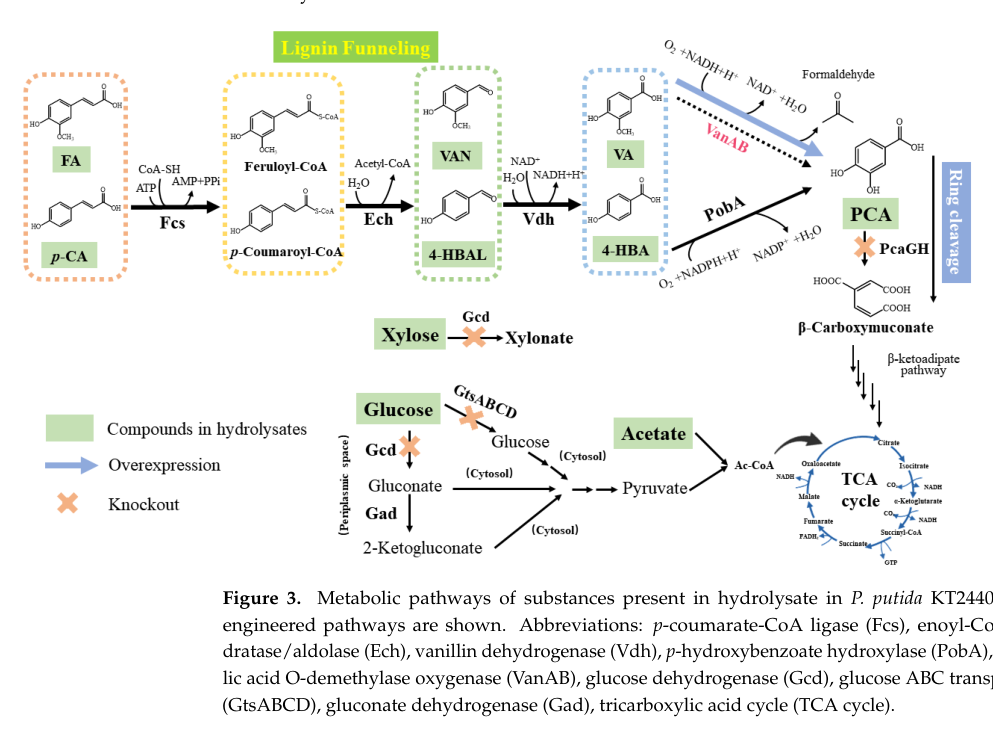

pcaG encodes the alpha subunit of the heteromeric protocatechuate 3,4-dioxygenase (PcaHG) in Pseudomonas putida KT2440. In the assembled PcaHG complex, the alpha chain helps form the catalytic interface that carries out Fe(III)-dependent intradiol ring cleavage of protocatechuate to 3-carboxy-cis,cis-muconate in the protocatechuate branch of the beta-ketoadipate pathway. KT2440 deletion experiments show that loss of pcaHG blocks downstream protocatechuate consumption, while structural studies of the Pseudomonas enzyme indicate that ferric-iron ligation is provided by beta-subunit residues rather than by pcaG itself.
| GO Term | Evidence | Action | Reason |
|---|---|---|---|
|
GO:0003824
catalytic activity
|
IEA
GO_REF:0000002 |
MARK AS OVER ANNOTATED |
Summary: Technically true but much too generic to be useful once the specific protocatechuate 3,4-dioxygenase term is present.
Reason: GO:0018578 captures the relevant biochemical activity and substrate specificity. Retaining GO:0003824 does not add meaningful functional resolution.
|
|
GO:0005506
iron ion binding
|
IEA
GO_REF:0000002 |
REMOVE |
Summary: Unsupported for the pcaG alpha subunit. Structural analyses place the catalytic Fe3+ ligands on beta-subunit residues, not on pcaG.
Reason: The alpha chain contributes to the catalytic interface, but the iron-ligating residues defined for protocatechuate 3,4-dioxygenase are all on the beta subunit. This makes the iron-binding annotation a subunit-level overassignment for pcaG. Falcon deep research independently describes the catalytic Fe(III) as a 2-His/2-Tyr center, a holoenzyme-level cofactor property rather than an alpha-subunit function.
Supporting Evidence:
PMID:9485360
is bound by axial ligands, Tyr447 (147beta) and His462 (162beta), and equatorial ligands, Tyr408 (108beta), His460 (160beta)
PMID:9254600
Tyr447 is stabilized by hydrogen bonding to Tyr16 (16alpha) and Asp413 (113beta)
file:PSEPK/pcaG/pcaG-deep-research-falcon.md
the catalytic metal is **Fe(III)** coordinated by a **2-His/2-Tyr ligand set**, and crystallography captured **alkylperoxo and anhydride intermediates** following O2 addition
|
|
GO:0008199
ferric iron binding
|
IEA
GO_REF:0000002 |
REMOVE |
Summary: Also unsupported for pcaG specifically. The holoenzyme uses Fe3+, but the identified ferric-iron ligands belong to the beta subunit.
Reason: This annotation confuses a complex-level cofactor requirement with the subunit-level molecular function of pcaG. The structural data support retaining the complex dioxygenase activity while dropping ferric-iron binding on the alpha chain. Falcon deep research reinforces this by describing the Fe(III) 2-His/2-Tyr center as a property of the assembled 3,4-PCD enzyme.
Supporting Evidence:
PMID:9485360
is bound by axial ligands, Tyr447 (147beta) and His462 (162beta), and equatorial ligands, Tyr408 (108beta), His460 (160beta)
PMID:9254600
Tyr447 is stabilized by hydrogen bonding to Tyr16 (16alpha) and Asp413 (113beta)
file:PSEPK/pcaG/pcaG-deep-research-falcon.md
the catalytic metal is **Fe(III)** coordinated by a **2-His/2-Tyr ligand set**, and crystallography captured **alkylperoxo and anhydride intermediates** following O2 addition
|
|
GO:0016702
oxidoreductase activity, acting on single donors with incorporation of molecular oxygen, incorporation of two atoms of oxygen
|
IEA
GO_REF:0000002 |
MARK AS OVER ANNOTATED |
Summary: Broad parent term that is consistent with dioxygenase chemistry but over-annotated relative to the specific protocatechuate 3,4-dioxygenase term.
Reason: The specific molecular function GO:0018578 already captures the relevant oxygen-incorporating chemistry and substrate identity. The parent oxidoreductase term is therefore redundant.
|
|
GO:0018578
protocatechuate 3,4-dioxygenase activity
|
IEA
GO_REF:0000120 |
ACCEPT |
Summary: Correct core molecular function. pcaG is the alpha chain of the PcaHG protocatechuate 3,4-dioxygenase that cleaves protocatechuate in aromatic catabolism.
Reason: Classical cloning and biochemical work identify pcaG as the alpha subunit of protocatechuate 3,4-dioxygenase, Pseudomonas enzyme biochemistry shows an alpha-beta catalytic unit architecture, and KT2440 deletion experiments confirm the same two-subunit enzyme assignment in this strain. The qualifier should be contributes_to because the activity is realized by the assembled PcaHG complex, not by the isolated alpha chain.
Supporting Evidence:
PMID:8407791
contain two successive open reading frames, designated pcaH and pcaG, corresponding to the beta and alpha subunits, respectively, of 3,4-PCD
PMID:6273403
contains 4 alpha subunits of 23,000 daltons, 4 beta subunits of 26,500 daltons, and 4 ferric irons suggesting that the enzyme is a tetramer of (alpha beta Fe+3) catalytic units
PMID:29765865
deleting the genes pcaH and pcaG, which encode the two-subunit protocatechuate 3,4-dioxygenase
file:PSEPK/pcaG/pcaG-deep-research-falcon.md
encodes the **α-subunit of protocatechuate 3,4-dioxygenase (PcaGH; EC 1.13.11.3)**, the canonical intradiol ring-cleaving dioxygenase of the protocatechuate (PCA) branch of the **β-ketoadipate pathway**
|
|
GO:0019618
protocatechuate catabolic process, ortho-cleavage
|
IC
PMID:29765865 A protocatechuate biosensor for Pseudomonas putida KT2440 vi... |
NEW |
Summary: Missing core biological-process term. pcaG contributes to the ortho-cleavage step that commits protocatechuate to downstream beta-ketoadipate metabolism.
Reason: KT2440 pcaHG deletion blocks protocatechuate consumption, while classical Pseudomonas pcaGH studies define the enzyme as a protocatechuate ortho-cleavage dioxygenase. This term captures the direct pathway step more precisely than a generic aromatic catabolism term.
Supporting Evidence:
PMID:29765865
deleting the genes pcaH and pcaG, which encode the two-subunit protocatechuate 3,4-dioxygenase
PMID:10049847
vanillin is degraded through the ortho-cleavage pathway in Pseudomonas sp. strain HR199
file:PSEPK/pcaG/pcaG-deep-research-falcon.md
**ΔpcaGH** blocks PCA ring cleavage, allowing PCA accumulation and preventing further catabolism through the native β-ketoadipate pathway
|
|
GO:0042952
beta-ketoadipate pathway
|
IC
PMID:18156252 The target for the Pseudomonas putida Crc global regulator i... |
NEW |
Summary: Appropriate broader pathway annotation for an enzyme in the central protocatechuate branch of aromatic assimilation.
Reason: pcaG is not merely associated with aromatic metabolism in general; it encodes one of the core ring-cleavage subunits that feeds the beta-ketoadipate pathway. This is broader than GO:0019618, but still directly applicable to the enzyme itself.
Supporting Evidence:
PMID:18156252
the cat and pca genes of the central catechol and beta-ketoadipate pathways
PMID:29765865
native (in which PCA is metabolized via the β-ketoadipate pathway)
file:PSEPK/pcaG/pcaG-deep-research-openai.md
The pcaG gene product is a central enzyme in the β-ketoadipate pathway
file:PSEPK/pcaG/pcaG-deep-research-falcon.md
**pcaGH is the commitment step that prevents PCA accumulation**, because once PCA is cleaved to carboxymuconate, flux is directed into the central β-ketoadipate pathway
|
Q: Which alpha-subunit interface residues in KT2440 PcaG most strongly determine substrate positioning and turnover once the beta-subunit Fe3+ center is assembled?
Suggested experts: Structural enzymologists, Aromatic-catabolism biochemists
Q: Under mixed lignin-derived aromatic substrates, is PcaHG flux-limiting relative to upstream protocatechuate-producing enzymes in KT2440?
Suggested experts: Pseudomonas systems biologists, Metabolic engineers
Experiment: Mutate alpha-subunit interface residues such as Tyr16 and assay protocatechuate cleavage kinetics, substrate range, and growth on protocatechuate, p-hydroxybenzoate, and vanillate.
Type: Site-directed mutagenesis
Experiment: Compare WT, delta-pcaG, delta-pcaH, and complemented strains during growth on protocatechuate and upstream aromatics to quantify protocatechuate accumulation and downstream beta-ketoadipate intermediates.
Type: Knockout-complement metabolomics
This report is retrieval-only and is generated directly from Asta results.
search_papers_by_relevance with snippet_search.The research report should be a detailed narrative explaining the function, biological processes, and localization of the gene product. Citations should be given for all claims.
You should prioritize authoritative reviews and primary scientific literature when conducting research. You can supplement
this with annotations you find in gene/protein databases, but these can be outdated or inaccurate.
We are specifically interested in the primary function of the gene - for enzymes, what reaction is catalyzed, and what is the substrate specificity? For transporters, what is the substrate? For structural proteins or adapters, what is the broader structural role? For signaling molecules, what is the role in the pathway.
We are interested in where in or outside the cell the gene product carries out its function.
We are also interested in the signaling or biochemical pathways in which the gene functions. We are less interested in broad pleiotropic effects, except where these elucidate the precise role.
Include evidence where possible. We are interested in both experimental evidence as well as inference from structure, evolution, or bioinformatic analysis. Precise studies should be prioritized over high-throughput, where available.
The UniProt accession Q88E13 corresponds to pcaG/PP_4655 in Pseudomonas putida KT2440 and encodes the α-subunit of protocatechuate 3,4-dioxygenase (PcaGH; EC 1.13.11.3), the canonical intradiol ring-cleaving dioxygenase of the protocatechuate (PCA) branch of the β-ketoadipate pathway. This mapping is explicitly used in KT2440 metabolic-engineering work referring to pcaGH (PP_4655–PP_4656) as the protocatechuate 3,4-dioxygenase step. (jin2024biologicalvalorizationof pages 1-2, valderramagomez2020mechanisticmodelingof pages 33-36)
Protocatechuate 3,4-dioxygenase (PcaGH) catalyzes intradiol (ortho) cleavage of the aromatic ring of protocatechuate (3,4-dihydroxybenzoate; PCA), producing 3-carboxy-cis,cis-muconate (also termed β-carboxy-cis,cis-muconate), a central intermediate that is further metabolized toward TCA-cycle entry in the β-ketoadipate pathway. (chow2024confirmationofgenesa pages 11-15, valderramagomez2020mechanisticmodelingof pages 33-36)
A systems-level description of this enzymatic step is:
- PCA ⇌ β-carboxy-cis,cis-muconate (PcaGH-catalyzed). (valderramagomez2020mechanisticmodelingof pages 33-36)
PcaG belongs to the intradiol ring-cleavage dioxygenase family (intradiol dioxygenases / IDOs). Mechanistic structural work on protocatechuate 3,4-dioxygenase-type intradiol enzymes established that the catalytic metal is Fe(III) coordinated by a 2-His/2-Tyr ligand set, and crystallography captured alkylperoxo and anhydride intermediates following O2 addition, supporting a detailed intradiol O2-activation mechanism. (knoot2015crystalstructuresof pages 1-3)
Although this mechanistic evidence is not specific to the KT2440 protein sequence, it represents the authoritative biochemical framework currently used to interpret PcaGH-class catalysis. (knoot2015crystalstructuresof pages 1-3)
The physiological substrate of PcaGH is protocatechuate; however, KT2440-focused work indicates PcaHG can also catalyze intradiol cleavage of gallate, and that such activity is relevant for engineered conversion of syringyl-derived intermediates (e.g., gallate, 3-methoxy-gallate-related metabolites) toward downstream products such as 2-pyrone-4,6-dicarboxylate (PDC) via rearrangement/cyclization chemistry of ring-cleavage products. (dumalo2020dioxygenasesinthe pages 39-44, dumalo2020dioxygenasesinthe pages 32-39)
A mechanistic modeling study of the protocatechuate pathway describes the relevant structural genes as being expressed from a polycistronic mRNA (pcaBKCHG) and highlights that protocatechuate uptake can involve PcaK, a transporter capable of importing PCA into the cell. (valderramagomez2020mechanisticmodelingof pages 33-36)
Regulation is mediated by PcaU, an IclR-family transcriptional regulator that functions as an activator in the presence of the inducer protocatechuate and as a repressor in its absence (i.e., a bidirectional regulator depending on ligand). This PCA-responsive regulation has been exploited for biosensor engineering in KT2440 (below). (valderramagomez2020mechanisticmodelingof pages 33-36, jha2018aprotocatechuatebiosensor pages 3-4)
All evidence in the retrieved KT2440 literature is consistent with PcaG functioning as an intracellular (cytosolic) enzyme in aromatic catabolism: ΔpcaGH blocks intracellular PCA catabolism and yields intracellular PCA accumulation phenotypes; additionally, PcaK is described as a PCA importer (implying intracellular metabolism). Direct microscopy-based localization experiments for KT2440 PcaG were not identified in the retrieved sources. (jha2018aprotocatechuatebiosensor pages 2-3, valderramagomez2020mechanisticmodelingof pages 33-36)
A 2024 metabolic-engineering study in P. putida KT2440 used pcaGH deletion to prevent ring cleavage of PCA and thereby accumulate protocatechuic acid from lignin-derived aromatic inputs (“biological funneling”). The work reports:
- From corncob hydrolysates: 253.88 mg/L PCA (70.85% yield) and a maximum 433.72 mg/L PCA without additional nutrients. (Jin et al., 2024-03, Molecules, https://doi.org/10.3390/molecules29071555) (jin2024biologicalvalorizationof pages 1-2)
- In a ΔpcaGH strain (KT1), near-complete conversion of 1 g/L model phenolics to PCA with yields 97.7% (p-coumarate), 98.5% (4-hydroxybenzaldehyde), and 93.1% (4-hydroxybenzoate) under the tested conditions. (jin2024biologicalvalorizationof pages 4-7)
The pathway-level rationale is visually summarized in the study’s pathway diagram, where pcaGH is the downstream ring-cleavage step whose removal diverts flux to PCA accumulation. (jin2024biologicalvalorizationof media 66b82404)
The same 2024 KT2440 engineering work also emphasizes that blocking PCA cleavage (ΔpcaGH) can be combined with modulation of upstream steps (e.g., vanillate O-demethylation and related conversions) to improve funneling from complex aromatic mixtures. The study reports that ΔpcaGH did not cause a discernible growth defect in glucose-supplemented conditions, suggesting that in some process designs cells can grow on alternative carbon sources while PCA accumulates as a product. (jin2024biologicalvalorizationof pages 7-9)
Within the retrieved corpus, the highest-resolution mechanistic evidence remains the crystallographic capture of catalytic intermediates in an intradiol ring-cleaving dioxygenase (PCD-type), including Fe(III) coordination and peroxo/anhydride intermediates. These data strongly inform how researchers interpret substrate scope, reaction intermediates, and potential engineering strategies (e.g., expanding substrate acceptance). (Knoot et al., 2015-12, PNAS, https://doi.org/10.1073/pnas.1419118112) (knoot2015crystalstructuresof pages 1-3)
The most direct real-world application evidenced here is bioproduction of PCA from lignin-derived aromatics using engineered KT2440 strains with ΔpcaGH as the key flux-blocking modification, demonstrating production directly from complex biomass hydrolysates with quantified titers and yields. (jin2024biologicalvalorizationof pages 1-2)
A table and fermentation profiles in the 2024 study summarize PCA production outcomes across substrates and hydrolysates, providing an at-a-glance quantitative benchmark for process design. (jin2024biologicalvalorizationof media dc814145, jin2024biologicalvalorizationof media 7fa8d197)
A protocatechuate biosensor was ported and evolved in P. putida KT2440 by leveraging the PCA-responsive regulator PcaU. In KT2440 backgrounds engineered for PCA accumulation (ΔpcaHG strain CJ072), the best evolved variant (T147G/D148Y in PcaU) detected exogenous PCA below 0.003 mM with >12-fold contrast ratio, enabling high-throughput screening and pathway debugging for lignin-valorization strain engineering. (Jha et al., 2018-06, Metabolic Engineering Communications, https://doi.org/10.1016/j.meteno.2018.03.001) (jha2018aprotocatechuatebiosensor pages 4-5)
KT2440 work on syringyl aromatic catabolism describes engineering strategies that include overexpression of pcaHG (e.g., chromosomal Ptac-driven pcaHG) and pathway blocking (e.g., ΔgalA) to increase production of 2-pyrone-4,6-dicarboxylate (PDC) from syringate-related inputs, consistent with PcaHG’s capacity to cleave gallate and generate intermediates that can cyclize to PDC. (dumalo2020dioxygenasesinthe pages 32-39, dumalo2020dioxygenasesinthe pages 39-44)
The retrieved literature converges on a clear interpretation: pcaGH is the commitment step that prevents PCA accumulation, because once PCA is cleaved to carboxymuconate, flux is directed into the central β-ketoadipate pathway rather than remaining as an aromatic acid product. Therefore, ΔpcaGH is a canonical chassis edit to:
- accumulate PCA as a product, or
- enable PCA-dependent biosensors to report intracellular PCA, or
- redirect flux from native mineralization toward value-added products.
This control-point logic is directly demonstrated by high-yield PCA accumulation upon ΔpcaGH in KT2440. (jin2024biologicalvalorizationof pages 4-7, jha2018aprotocatechuatebiosensor pages 4-5)
For functional annotation, coupling enzymatic function (PcaGH) with PcaU-mediated regulation and PcaK-mediated uptake provides a coherent picture of a modular catabolic unit: PCA enters the cell (PcaK), induces the local regulator (PcaU), and is then cleaved by PcaGH, which is the key “ring-opening” bottleneck connecting lignin-derived aromatics to central metabolism. (valderramagomez2020mechanisticmodelingof pages 33-36)
The following table consolidates key annotation facts, mechanism, regulation, localization, and application-relevant quantitative data.
| Aspect | Key points | Evidence/notes |
|---|---|---|
| Identity / verification | pcaG = PP_4655 = α-subunit of protocatechuate 3,4-dioxygenase (PcaGH) in Pseudomonas putida KT2440; enzyme is a heterodimeric/oligomeric intradiol dioxygenase with β-subunit pcaH. | KT2440 engineering papers explicitly refer to pcaGH (PP_4655-4656) as protocatechuate 3,4-dioxygenase; biosensor work identifies pcaH/pcaG as the two-subunit PCA 3,4-dioxygenase; modeling paper states α = pcaG, β = pcaH. (jin2024biologicalvalorizationof pages 1-2, jha2018aprotocatechuatebiosensor pages 2-3, valderramagomez2020mechanisticmodelingof pages 33-36) |
| Reaction | Catalyzes intradiol 3,4-cleavage of protocatechuate (PCA) to 3-carboxy-cis,cis-muconate (also written β-carboxy-cis,cis-muconate). This is the ring-opening step of the PCA branch. | Bacterial PCA pathway summary names the product as 3-carboxy-cis,cis-muconic acid; modeling paper assigns reversible conversion PCA ↔ β-carboxy-cis,cis-muconate. (chow2024confirmationofgenesa pages 11-15, valderramagomez2020mechanisticmodelingof pages 33-36) |
| Enzyme class / mechanism | Member of the intradiol ring-cleaving dioxygenase family; mechanism proceeds through O2 addition and peroxo/anhydride intermediates characteristic of Fe-dependent intradiol cleavage chemistry. | Structural/mechanistic studies on 3,4-PCD captured alkylperoxo and anhydride intermediates and define it as an intradiol dioxygenase. (knoot2015crystalstructuresof pages 1-3) |
| Cofactor / active site | Active site contains Fe3+ coordinated by a 2-His/2-Tyr ligand set; tyrosines contribute ligand-to-metal charge transfer features. | High-confidence mechanistic evidence from crystal structures of 3,4-PCD. (knoot2015crystalstructuresof pages 1-3) |
| Substrates / specificity | Primary physiological substrate is protocatechuate. In KT2440-focused biochemical work, PcaHG also cleaves gallate, with expected lower specificity than for protocatechuate; products were investigated as (Z)-OMAe and PDC in engineering contexts. | KT2440 thesis work specifically tested protocatechuate and gallate, hypothesizing lower specificity for gallate and linking activity to PDC production. (dumalo2020dioxygenasesinthe pages 39-44, dumalo2020dioxygenasesinthe pages 32-39) |
| Quantitative mechanistic data | For 3,4-PCD with alternative substrate 4-fluorocatechol: observable stopped-flow steps had RRTs 0.92, 0.50, and 0.16 s−1; apparent Kd ≈ 7.5 mM for the initial weak complex; overall substrate Kd predicted ≈ 88 μM, direct titration ≈ 75 μM. | These values come from a mechanistic 3,4-PCD study and are informative for enzyme behavior, though not KT2440-specific in vivo physiology. (knoot2015crystalstructuresof pages 1-3) |
| Pathway role | Central enzyme of the β-ketoadipate / protocatechuate branch, funnelling diverse aromatics after biological funneling to PCA toward central metabolism / TCA-cycle entry. | Reviews and KT2440 engineering papers place pcaGH at the PCA ring-cleavage step connecting lignin-derived aromatic catabolism to central carbon metabolism. (dumalo2020dioxygenasesinthe pages 32-39, jin2024biologicalvalorizationof pages 4-7, perez‐pantoja2012genomicanalysisof pages 10-12, jin2024biologicalvalorizationof media 66b82404) |
| Gene organization | pca catabolic genes in Pseudomonas are classically named pcaGH, pcaB, pcaC, pcaD; one systems model represents structural genes on a polycistronic pcaBKCHG mRNA. | Useful for functional annotation, though organization can vary across taxa and publications. (chow2024confirmationofgenesa pages 11-15, valderramagomez2020mechanisticmodelingof pages 33-36) |
| Regulation | PcaU is the local regulator: an IclR-family transcription factor that acts as activator in the presence of protocatechuate and repressor in its absence; PcaU-based regulatory parts were portable enough to engineer a PCA biosensor in KT2440. | Modeling and biosensor papers support PCA-responsive regulation through PcaU. (valderramagomez2020mechanisticmodelingof pages 33-36, jha2018aprotocatechuatebiosensor pages 3-4, jha2018aprotocatechuatebiosensor pages 1-2) |
| Transport context | PcaK can transport protocatechuate into the cell, coupling uptake to pca pathway function. | Relevant to interpreting intracellular PCA availability and pcaGH knockout phenotypes. (valderramagomez2020mechanisticmodelingof pages 33-36) |
| Cellular localization | Evidence supports an intracellular/cytosolic role in aromatic catabolism rather than secretion or membrane localization. | Biosensor/pathway studies describe intracellular PCA accumulation/catabolism; ring-cleavage enzymes in these studies are treated as intracellular pathway enzymes. Direct localization experiment for KT2440 PcaG was not identified in retrieved sources. (valderramagomez2020mechanisticmodelingof pages 33-36, jha2018aprotocatechuatebiosensor pages 2-3, jin2024biologicalvalorizationof pages 4-7) |
| KT2440 knockout phenotype | ΔpcaGH blocks PCA ring cleavage, allowing PCA accumulation and preventing further catabolism through the native β-ketoadipate pathway. In glucose-containing media, knockout reportedly had no discernible impact on growth in one study. | Seen in KT2440 strains used for PCA accumulation and sensor characterization. (jin2024biologicalvalorizationof pages 4-7, jin2024biologicalvalorizationof pages 7-9, jha2018aprotocatechuatebiosensor pages 3-4) |
| KT2440 engineering: PCA accumulation from model aromatics | In engineered KT2440 KT1 (ΔpcaGH), PCA yields from 1 g/L substrates were 97.7% from p-coumarate, 98.5% from 4-hydroxybenzaldehyde, and 93.1% from 4-hydroxybenzoate. | Demonstrates that blocking pcaGH efficiently diverts flux to PCA accumulation. (jin2024biologicalvalorizationof pages 4-7) |
| KT2440 engineering: vanAB overexpression with ΔpcaGH | In KT2, endogenous vanAB overexpression on top of ΔpcaGH increased PCA yield from 2.61% to 75.63% for ferulic acid; strain also converted 10 g/L p-coumarate to 6.11 g/L PCA in 72 h; with ferulate, 2.5 g/L consumed and 1.9 g/L PCA after 72 h. | Shows pcaGH deletion is a key chassis modification for lignin-monomer valorization. (jin2024biologicalvalorizationof pages 7-9) |
| KT2440 engineering: hydrolysate valorization | In 2024 hydrolysate work, engineered KT2440 produced 253.88 mg/L PCA at 70.85% yield from one corncob hydrolysate and 433.72 mg/L PCA from another without added nutrients. | Figure/pathway summary explicitly shows pcaGH knockout as the enabling design feature. (jin2024biologicalvalorizationof pages 1-2, jin2024biologicalvalorizationof media 66b82404) |
| KT2440 engineering: gallate/PDC route | Chromosomal overexpression of pcaHG (e.g., Ptac:pcaHG) in KT2440 was used to enhance conversion of syringate/gallate-derived intermediates toward 2-pyrone-4,6-dicarboxylate (PDC). | Highlights that pcaG can be used both as a knockout target (to accumulate PCA) and an overexpression target (to drive ring-cleavage chemistry on noncanonical substrates). (dumalo2020dioxygenasesinthe pages 32-39, dumalo2020dioxygenasesinthe pages 39-44) |
| Biosensor application | A PcaU-based PCA biosensor evolved in KT2440 detected PCA at <0.003 mM with >12-fold contrast ratio; FACS selections used inductions from 0.01–10 mM PCA and selected the top 1% induced cells after pre-clearing the bottom 40% dark population. | While not measuring PcaG directly, this is a practical KT2440 application exploiting native PCA/pca regulation and ΔpcaGH backgrounds. (jha2018aprotocatechuatebiosensor pages 4-5, jha2018aprotocatechuatebiosensor pages 2-3) |
| Interpretation for annotation | Best-supported annotation for Q88E13 / PP_4655: intracellular α-subunit of the Fe(III)-dependent protocatechuate 3,4-dioxygenase that catalyzes intradiol ring opening of PCA in the β-ketoadipate pathway; highly relevant to lignin-derived aromatic catabolism and metabolic engineering in KT2440. | Consolidated from organism-specific and mechanistic sources. (jin2024biologicalvalorizationof pages 1-2, jin2024biologicalvalorizationof pages 4-7, valderramagomez2020mechanisticmodelingof pages 33-36, knoot2015crystalstructuresof pages 1-3, jin2024biologicalvalorizationof media 66b82404) |
Table: This table summarizes the verified identity, biochemical function, pathway context, regulation, localization, and engineering relevance of Pseudomonas putida KT2440 pcaG (UniProt Q88E13/PP_4655). It also captures key numeric results from recent KT2440 metabolic-engineering studies and supporting mechanistic work.
References
(jin2024biologicalvalorizationof pages 1-2): Xinzhu Jin, Xiaoxia Li, Lihua Zou, Zhaojuan Zheng, and Jia Ouyang. Biological valorization of lignin-derived aromatics in hydrolysate to protocatechuic acid by engineered pseudomonas putida kt2440. Molecules, 29:1555, Mar 2024. URL: https://doi.org/10.3390/molecules29071555, doi:10.3390/molecules29071555. This article has 15 citations.
(valderramagomez2020mechanisticmodelingof pages 33-36): Miguel Á. Valderrama-Gómez, Jason G. Lomnitz, Rick A. Fasani, and Michael A. Savageau. Mechanistic modeling of biochemical systems without a priori parameter values using the design space toolbox v.3.0. iScience, 23:101200, Jun 2020. URL: https://doi.org/10.1016/j.isci.2020.101200, doi:10.1016/j.isci.2020.101200. This article has 15 citations and is from a peer-reviewed journal.
(chow2024confirmationofgenesa pages 11-15): N Chow. Confirmation of genes involved in the degradation of protocatechuate in aspergillus niger through characterization of their encoded enzymes. Unknown journal, 2024.
(knoot2015crystalstructuresof pages 1-3): Cory J. Knoot, Vincent M. Purpero, and John D. Lipscomb. Crystal structures of alkylperoxo and anhydride intermediates in an intradiol ring-cleaving dioxygenase. Proceedings of the National Academy of Sciences, 112:388-393, Dec 2015. URL: https://doi.org/10.1073/pnas.1419118112, doi:10.1073/pnas.1419118112. This article has 48 citations and is from a highest quality peer-reviewed journal.
(dumalo2020dioxygenasesinthe pages 39-44): Linda Dumalo. Dioxygenases in the catabolism of syringols in pseudomonas putida kt2440. ArXiv, Jan 2020. URL: https://doi.org/10.14288/1.0394310, doi:10.14288/1.0394310. This article has 0 citations.
(dumalo2020dioxygenasesinthe pages 32-39): Linda Dumalo. Dioxygenases in the catabolism of syringols in pseudomonas putida kt2440. ArXiv, Jan 2020. URL: https://doi.org/10.14288/1.0394310, doi:10.14288/1.0394310. This article has 0 citations.
(jha2018aprotocatechuatebiosensor pages 3-4): Ramesh K. Jha, Jeremy M. Bingen, Christopher W. Johnson, Theresa L. Kern, Payal Khanna, Daniel S. Trettel, Charlie E.M. Strauss, Gregg T. Beckham, and Taraka Dale. A protocatechuate biosensor for pseudomonas putida kt2440 via promoter and protein evolution. Jun 2018. URL: https://doi.org/10.1016/j.meteno.2018.03.001, doi:10.1016/j.meteno.2018.03.001. This article has 54 citations and is from a peer-reviewed journal.
(jha2018aprotocatechuatebiosensor pages 2-3): Ramesh K. Jha, Jeremy M. Bingen, Christopher W. Johnson, Theresa L. Kern, Payal Khanna, Daniel S. Trettel, Charlie E.M. Strauss, Gregg T. Beckham, and Taraka Dale. A protocatechuate biosensor for pseudomonas putida kt2440 via promoter and protein evolution. Jun 2018. URL: https://doi.org/10.1016/j.meteno.2018.03.001, doi:10.1016/j.meteno.2018.03.001. This article has 54 citations and is from a peer-reviewed journal.
(jin2024biologicalvalorizationof pages 4-7): Xinzhu Jin, Xiaoxia Li, Lihua Zou, Zhaojuan Zheng, and Jia Ouyang. Biological valorization of lignin-derived aromatics in hydrolysate to protocatechuic acid by engineered pseudomonas putida kt2440. Molecules, 29:1555, Mar 2024. URL: https://doi.org/10.3390/molecules29071555, doi:10.3390/molecules29071555. This article has 15 citations.
(jin2024biologicalvalorizationof media 66b82404): Xinzhu Jin, Xiaoxia Li, Lihua Zou, Zhaojuan Zheng, and Jia Ouyang. Biological valorization of lignin-derived aromatics in hydrolysate to protocatechuic acid by engineered pseudomonas putida kt2440. Molecules, 29:1555, Mar 2024. URL: https://doi.org/10.3390/molecules29071555, doi:10.3390/molecules29071555. This article has 15 citations.
(jin2024biologicalvalorizationof pages 7-9): Xinzhu Jin, Xiaoxia Li, Lihua Zou, Zhaojuan Zheng, and Jia Ouyang. Biological valorization of lignin-derived aromatics in hydrolysate to protocatechuic acid by engineered pseudomonas putida kt2440. Molecules, 29:1555, Mar 2024. URL: https://doi.org/10.3390/molecules29071555, doi:10.3390/molecules29071555. This article has 15 citations.
(jin2024biologicalvalorizationof media dc814145): Xinzhu Jin, Xiaoxia Li, Lihua Zou, Zhaojuan Zheng, and Jia Ouyang. Biological valorization of lignin-derived aromatics in hydrolysate to protocatechuic acid by engineered pseudomonas putida kt2440. Molecules, 29:1555, Mar 2024. URL: https://doi.org/10.3390/molecules29071555, doi:10.3390/molecules29071555. This article has 15 citations.
(jin2024biologicalvalorizationof media 7fa8d197): Xinzhu Jin, Xiaoxia Li, Lihua Zou, Zhaojuan Zheng, and Jia Ouyang. Biological valorization of lignin-derived aromatics in hydrolysate to protocatechuic acid by engineered pseudomonas putida kt2440. Molecules, 29:1555, Mar 2024. URL: https://doi.org/10.3390/molecules29071555, doi:10.3390/molecules29071555. This article has 15 citations.
(jha2018aprotocatechuatebiosensor pages 4-5): Ramesh K. Jha, Jeremy M. Bingen, Christopher W. Johnson, Theresa L. Kern, Payal Khanna, Daniel S. Trettel, Charlie E.M. Strauss, Gregg T. Beckham, and Taraka Dale. A protocatechuate biosensor for pseudomonas putida kt2440 via promoter and protein evolution. Jun 2018. URL: https://doi.org/10.1016/j.meteno.2018.03.001, doi:10.1016/j.meteno.2018.03.001. This article has 54 citations and is from a peer-reviewed journal.
(perez‐pantoja2012genomicanalysisof pages 10-12): Danilo Pérez‐Pantoja, Raúl Donoso, Loreine Agulló, Macarena Córdova, Michael Seeger, Dietmar H. Pieper, and Bernardo González. Genomic analysis of the potential for aromatic compounds biodegradation in burkholderiales. Environmental microbiology, 14 5:1091-117, May 2012. URL: https://doi.org/10.1111/j.1462-2920.2011.02613.x, doi:10.1111/j.1462-2920.2011.02613.x. This article has 416 citations and is from a domain leading peer-reviewed journal.
(jha2018aprotocatechuatebiosensor pages 1-2): Ramesh K. Jha, Jeremy M. Bingen, Christopher W. Johnson, Theresa L. Kern, Payal Khanna, Daniel S. Trettel, Charlie E.M. Strauss, Gregg T. Beckham, and Taraka Dale. A protocatechuate biosensor for pseudomonas putida kt2440 via promoter and protein evolution. Jun 2018. URL: https://doi.org/10.1016/j.meteno.2018.03.001, doi:10.1016/j.meteno.2018.03.001. This article has 54 citations and is from a peer-reviewed journal.

The pcaG gene of Pseudomonas putida KT2440 encodes the alpha subunit of protocatechuate 3,4-dioxygenase (3,4-PCD), an enzyme that catalyzes ring-cleavage of protocatechuate (3,4-dihydroxybenzoate) in the β-ketoadipate pathway (pmc.ncbi.nlm.nih.gov) (pmc.ncbi.nlm.nih.gov). Protocatechuate 3,4-dioxygenase is classified as an intradiol ring-cleavage dioxygenase, a family of non-heme iron enzymes that cleave aromatic rings between two hydroxyl substituents (the “ortho” position) (www.sciencedirect.com) (www.sciencedirect.com). The enzyme is a hetero-oligomer composed of two types of subunits: the α subunit (product of pcaG, ~22–23 kDa) and the β subunit (product of pcaH, ~26–27 kDa) (pmc.ncbi.nlm.nih.gov). In P. putida, the active enzyme complex is an octamer containing 4 α and 4 β subunits (α4β4), with each αβ pair forming a catalytic unit bound to a non-heme ferric iron (Fe³⁺) cofactor (www.sciencedirect.com) (www.sciencedirect.com). The pcaG gene is part of the pca gene cluster involved in aromatic acid degradation, and its protein sequence shares high homology with protocatechuate 3,4-dioxygenases from other soil bacteria (e.g. 81% identity to the P. putida enzyme in a Pseudomonas sp. HR199 strain) (pmc.ncbi.nlm.nih.gov). This conservation underlines a well-preserved function across species.
Protocatechuate 3,4-dioxygenase (PcaHG) catalyzes the oxidative ring cleavage of protocatechuate using molecular oxygen. The reaction converts protocatechuate (a dihydroxybenzoate) into 3-carboxy-cis,cis-muconate (β-carboxy-cis,cis-muconate) (lookformedical.com) (pmc.ncbi.nlm.nih.gov). In biochemical terms, it is an ortho-cleavage (intradiol) of the aromatic ring: the enzyme incorporates both oxygen atoms from O2 into the substrate, breaking the ring between the C-3 and C-4 positions (the two carbon atoms bearing hydroxyl groups) (pmc.ncbi.nlm.nih.gov). The overall reaction can be summarized as:
Protocatechuate (3,4-dihydroxybenzoate) + O₂ → 3-Carboxy-cis,cis-muconate (open-ring dicarboxylic acid)
This dioxygenase requires a non-heme ferric iron (Fe³⁺) at its active site for catalysis (lookformedical.com). The Fe³⁺ is coordinated by conserved amino acid ligands (typically a His–Tyr pair in the equatorial plane and another His–Tyr axially in intradiol dioxygenases) and activates O₂ for attack on the aromatic ring (www.sciencedirect.com) (www.sciencedirect.com). Notably, the enzyme operates without external cofactors like NADH; the substrate itself (a catechol-type molecule) and O₂ are sufficient for the reaction, with the ferric iron facilitating O–O bond cleavage and substrate oxidation (www.sciencedirect.com). The product, 3-carboxy-cis,cis-muconate, is an open-chain muconate derivative in which the aromatic ring of protocatechuate has been cleaved and one of the ring carbons is converted into an additional carboxyl group (lookformedical.com). This ring-cleavage is a critical step that renders the aromatic compound digestible by central metabolic pathways.
Substrate specificity: The primary substrate of PcaHG is protocatechuate (3,4-dihydroxybenzoate), a common intermediate in the breakdown of diverse aromatic compounds. Classic studies have shown the enzyme has a high affinity for protocatechuate and generally requires the catechol-like ortho-dihydroxy arrangement for efficient catalysis (pubmed.ncbi.nlm.nih.gov). Some protocatechuate 3,4-dioxygenases exhibit narrow substrate specificity, which is advantageous for pathway flux control but can be a limitation in biodegradation of mixed pollutants (pubmed.ncbi.nlm.nih.gov). Interestingly, a 2014 study (Guzik et al.) isolated a PcaHG enzyme variant from Stenotrophomonas maltophilia that displayed atypically broad substrate specificity, cleaving analogs like 2,4-dihydroxybenzoate and 3,5-dihydroxybenzoate (which lack ortho-hydroxyls) by likely using a monodentate binding mode (pubmed.ncbi.nlm.nih.gov). This finding suggests some flexibility in the enzyme’s active site and is significant for environmental applications, as enzymes with broader specificity can tackle a wider range of aromatic pollutants (pubmed.ncbi.nlm.nih.gov). However, under normal physiological conditions in P. putida, protocatechuate is the preferred substrate and inducer of pcaG expression. The enzyme’s activity can be measured in cell extracts; for instance, complementation of a pcaG knockout restored protocatechuate 3,4-dioxygenase activity to wild-type levels (~0.8 U/mg protein in one report) and rescued growth on aromatics that funnel into protocatechuate (pmc.ncbi.nlm.nih.gov).
The pcaG gene product is a central enzyme in the β-ketoadipate pathway, a major aromatic catabolic route in soil bacteria and some fungi (pubmed.ncbi.nlm.nih.gov). This pathway enables microbes to use diverse aromatic compounds as carbon and energy sources by funneling them into Krebs cycle intermediates. It has two convergent branches: one via catechol (1,2-dioxygenase) and one via protocatechuate (3,4-dioxygenase) (pubmed.ncbi.nlm.nih.gov). P. putida KT2440 possesses both branches. The protocatechuate branch, in which PcaG functions, channels a variety of phenolic compounds into protocatechuate (pubmed.ncbi.nlm.nih.gov). Key precursors that are metabolized into protocatechuate include:
Once protocatechuate is formed inside the cell, PcaHG (protocatechuate 3,4-dioxygenase) cleaves it to yield 3-carboxy-cis,cis-muconate (pmc.ncbi.nlm.nih.gov). This open-chain product is further metabolized by downstream enzymes encoded in the pca cluster. In P. putida, 3-carboxy-cis,cis-muconate is first converted to 4-carboxy-muconolactone by β-carboxy-cis,cis-muconate lactonizing enzyme (pcaB) (www.sciencedirect.com). The lactone is then decarboxylated by 4-carboxymuconolactone decarboxylase (pcaC), yielding cis,cis-muconolactone (which no longer has the extra carboxyl) (pubmed.ncbi.nlm.nih.gov). Next, β-ketoadipate enol-lactone hydrolase (pcaD) converts the muconolactone into β-ketoadipate enol-lactone (pubmed.ncbi.nlm.nih.gov). This enol-lactone is rearranged (spontaneously or enzymatically) to β-ketoadipate (aka β-ketoadipic acid). Finally, β-ketoadipate is activated to a CoA-thioester by β-ketoadipate succinyl-CoA transferase (a heterodimer encoded by pcaI and pcaJ) and then cleaved by β-ketoadipyl-CoA thiolase (pcaF) into succinate and acetyl-CoA, which enter the tricarboxylic acid cycle (pubmed.ncbi.nlm.nih.gov). Through this pathway, the carbon from aromatics is fully assimilated. Harwood and Parales (1996) noted that the β-ketoadipate pathway is chromosomally encoded and widespread, allowing soil bacteria like P. putida to grow on aromatic compounds from decaying plant material (lignin monomers, phenolics) as sole carbon sources (pubmed.ncbi.nlm.nih.gov). This pathway is also tightly regulated and adapted in different species, reflecting its importance in microbial ecology (pubmed.ncbi.nlm.nih.gov).
In the context of vanillin catabolism, pcaG is absolutely essential. Pseudomonas strain HR199, for example, uses vanillin via conversion to protocatechuate; mutants lacking functional PcaHG cannot cleave protocatechuate and thus cannot metabolize vanillin further (pmc.ncbi.nlm.nih.gov) (pmc.ncbi.nlm.nih.gov). Overhage et al. (1999) isolated vanillin-degradation mutants of strain HR199 that accumulated protocatechuate (and downstream 3-carboxy muconolactone) but failed to grow on vanillin (pmc.ncbi.nlm.nih.gov) (pmc.ncbi.nlm.nih.gov). Cloning and reintroducing the pcaG/pcaH genes restored protocatechuate 3,4-dioxygenase activity and the ability to utilize vanillin, confirming that pcaG/pcaH were the missing functions in those mutants (pmc.ncbi.nlm.nih.gov) (pmc.ncbi.nlm.nih.gov). Thus, PcaG/PcaH form the gateway enzyme that commits protocatechuate to further degradation; without it, aromatic catabolism via this branch comes to a halt, leading to accumulation of upstream intermediates.
Protocatechuate 3,4-dioxygenase operates in the cytoplasm of P. putida. The enzyme acts on protocatechuate molecules that have entered the cytosol either by transport from outside or by being produced internally from precursor degradation. P. putida has dedicated transport systems for aromatic acids – notably the PcaK transporter, a high-affinity proton-driven permease, which imports protocatechuate and 4-hydroxybenzoate across the inner membrane (pmc.ncbi.nlm.nih.gov) (pmc.ncbi.nlm.nih.gov). Mutants lacking pcaK show impaired uptake and growth on these substrates, indicating that while undissociated aromatic acids can diffuse slowly, active transport is important for efficient catabolism (pmc.ncbi.nlm.nih.gov). pcaK is part of the β-ketoadipate regulon and even influences chemotaxis; P. putida can sense aromatic acids and move toward them, a behavior coupled to the presence of the PcaK protein (which has a chemoreceptor domain) (pmc.ncbi.nlm.nih.gov). After transport, protocatechuate is in the cytosol where PcaHG can act on it. All enzymes of the β-ketoadipate pathway (PcaB, C, D, IJ, F, etc.) are cytosolic as well, since the pathway intermediates are small, soluble organic acids.
Gene regulation: Expression of pcaG (and its partner pcaH) is tightly regulated as part of the pca operon to ensure the enzymes are produced only when needed. In P. putida, the pathway is controlled by the regulatory gene pcaR, which encodes a LysR-type transcriptional activator (pmc.ncbi.nlm.nih.gov). PcaR responds to protocatechuate (or a closely related inducer) and activates transcription of the pca genes when protocatechuate is present as a substrate (pmc.ncbi.nlm.nih.gov). Romero-Steiner et al. (1994) showed that pcaR is required for induction of all the downstream pca enzymes: mutants in pcaR cannot induce pcaBDC (lactonizing enzyme and decarboxylase), pcaIJF (transferase and thiolase), nor presumably pcaGH, in response to protocatechuate (pmc.ncbi.nlm.nih.gov). In fact, PcaR also influences behavioral responses (the chemotaxis toward aromatics) and works in tandem with other regulators for upper pathways (pmc.ncbi.nlm.nih.gov) (pmc.ncbi.nlm.nih.gov). Upstream of protocatechuate, the conversion of 4-hydroxybenzoate to protocatechuate is regulated by PobR, a MarR-family regulator that induces pobA in the presence of 4-hydroxybenzoate (pmc.ncbi.nlm.nih.gov). PobR and PcaR thus form a layered regulatory circuit: PobR senses the initial substrate (e.g. 4-HB) and PcaR senses the downstream product (protocatechuate), coordinating the two phases of the pathway (pmc.ncbi.nlm.nih.gov). Additionally, pcaR and pcaK are linked to a chemotaxis operon (pcaRKF), highlighting that P. putida not only metabolizes aromatics but can also move toward them in the environment (pmc.ncbi.nlm.nih.gov).
Transcription of pcaG and pcaH is typically co-ordinated as an operon (often denoted pcaHG). In Acinetobacter and other bacteria with the β-ketoadipate pathway, these two subunit genes are adjacent and co-transcribed (pmc.ncbi.nlm.nih.gov), and likely the same is true in P. putida KT2440 (pcaH and pcaG are neighbors PP_4654–PP_4655). Induction occurs when cells encounter protocatechuate or any metabolite that is converted to protocatechuate; the protein is not produced during growth on non-aromatic substrates. Experimentally, deletion of pcaG/pcaH abolishes protocatechuate 3,4-dioxygenase activity and prevents P. putida from using protocatechuate or related aromatics as growth substrates (pmc.ncbi.nlm.nih.gov). Conversely, providing pcaGH on a plasmid or in trans can complement such a knockout (pmc.ncbi.nlm.nih.gov). This tight regulation and requirement underscore that pcaG* is only advantageous to express when its substrate is available, as the enzyme has no other known cellular role except in aromatic catabolism.
The protocatechuate 3,4-dioxygenase has been well-studied structurally, serving as a model for intradiol dioxygenases. The enzyme from P. putida was crystallized as early as the 1960s (pubmed.ncbi.nlm.nih.gov), and a high-resolution crystal structure was solved in 1988 (Ohlendorf et al., Nature 336:403) (www.sciencedirect.com). The holo-enzyme is an α4β4 octamer of ~200 kDa total size (www.sciencedirect.com). Each αβ unit contains one mononuclear Fe³⁺ in the active site (www.sciencedirect.com). The iron is coordinated by a set of conserved residues in a His2-Tyr2 geometry, meaning two histidines and two tyrosines serve as ligands (www.sciencedirect.com) (www.sciencedirect.com). This coordination environment is a hallmark of intradiol dioxygenases (for instance, catechol 1,2-dioxygenase shares a very similar Fe(III) ligand set) (www.sciencedirect.com). In protocatechuate 3,4-dioxygenase, one of the tyrosine ligands (Tyr447 in P. aeruginosa 3,4-PCD numbering) has been observed to swing out of the coordination sphere upon substrate binding (www.sciencedirect.com). This ligand displacement may facilitate O₂ binding to the iron and subsequent formation of a feebly bound superoxide intermediate that attacks the substrate. The catalytic mechanism is thought to proceed via an Fe(III)-bound superoxide attacking the catechol ring to form a cyclic peroxide (extradiol enzymes use Fe(II) and a different mechanism) (www.sciencedirect.com) (www.sciencedirect.com). Cleavage of the O–O bond and rearomatization leads to the ring-opened muconate with both oxygens from O₂ incorporated (one as a hydroxyl that tautomerizes to a carbonyl/carboxyl, and one as the new terminal carboxylate) (lookformedical.com).
Notably, biochemical analyses indicate that all four iron sites in the octamer are catalytically active, and the minimal functional unit is the αβ heterodimer with one Fe³⁺ (www.sciencedirect.com). Early studies by Bull and Ballou (1981) showed an unusual iron stoichiometry: P. putida 3,4-PCD has 4 Fe per 8 subunits, suggesting each αβ pair binds one Fe, and additional iron does not bind tightly (excess iron added in vitro can bind and slightly enhance activity, but is not normally present in vivo) (www.sciencedirect.com). This differs from some other dioxygenases (e.g. homotetrameric catechol 1,2-dioxygenase has one Fe per subunit). The heterotetrameric nature (α₂β₂ unit) repeated in an octamer likely optimizes stability and places subunits in a geometry conducive to cooperatively channel substrate/product or maintain structural integrity. The α and β subunits of intradiol dioxygenases share some sequence similarity (around 20–30% identity to each other), hinting at a possible ancient gene duplication/divergence event (pmc.ncbi.nlm.nih.gov). Despite their differences, both subunits are required: the α subunit in 3,4-PCD is believed to contribute several of the iron-coordinating residues and the substrate binding pocket, while the β subunit may help correctly position these active-site residues and the substrate, as well as contribute to overall stability of the enzyme complex (www.sciencedirect.com). The precise roles of each subunit have been probed by reconstitution experiments and mutagenesis. For example, expressing pcaG alone does not yield activity; co-expression of pcaH is needed to assemble an active holoenzyme (pmc.ncbi.nlm.nih.gov) (pmc.ncbi.nlm.nih.gov). Moreover, hybrid enzymes reconstituted from subunits of different species often show loss of activity, underscoring specific α–β interactions. The structure by Ohlendorf et al. showed the enzyme as a cage-like assembly of alternating subunits, with active sites buried inside, accessible via channels that presumably allow protocatechuate entry and muconate exit. This multimeric assembly might prevent diffusion of reactive intermediates and protect the cell from any potentially harmful spontaneous oxidation reactions.
Beyond its biological role in nature, P. putida’s protocatechuate 3,4-dioxygenase has garnered interest in biotechnology and environmental science. Bioremediation: Since protocatechuate is a central intermediate in degrading pollutants (e.g. phenolic compounds, lignin fragments, aromatic acids), the presence of functional pcaG/pcaH is critical for any biodegradative strain. P. putida is a well-known bioremediation agent partly due to the β-ketoadipate pathway; it can cleanse soil and water of aromatic contaminants by mineralizing them. However, one limitation is that many intradiol dioxygenases are substrate-specific. The discovery of broad-substrate variants (like the 3,4-PCD from S. maltophilia KB2 in 2014) suggests it is possible to find or engineer enzymes that degrade multiple pollutants with overlapping structure (pubmed.ncbi.nlm.nih.gov). That enzyme could cleave non-ortho-dihydroxylated benzoates, making it a promising tool for environments where mixed aromatic wastes are present (pubmed.ncbi.nlm.nih.gov). Such findings spur efforts to engineer PcaHG enzymes with altered specificity or to transfer the pcaHG genes into other hosts to create robust biocatalysts for cleanup.
Metabolic engineering and synthetic biology: In recent years, there has been a push to repurpose P. putida KT2440 (a versatile, GRAS-status organism) as a microbial cell factory for producing value-added chemicals from renewable biomass. The pcaG gene and its enzyme are central in this context, either as a step to be enhanced or to be bypassed, depending on the target product. Two contrasting strategies highlight this:
1. Blocking PcaG/H to accumulate protocatechuic acid: Protocatechuic acid (PCA) itself is a valuable compound – a natural antioxidant and building block for pharmaceuticals and cosmetics. Normally, P. putida would catabolize PCA completely via PcaHG. In 2020–2023, researchers developed P. putida strains that accumulate PCA in high yield by deleting or inactivating pcaG and pcaH. Li et al. (2021) first engineered P. putida for de novo PCA production from glucose, introducing a biosynthetic route via the shikimate pathway and pobA while knocking out pcaGH to prevent PCA degradation (pmc.ncbi.nlm.nih.gov). This strain was further optimized in 2023: by balancing pathway enzymes and removing bottlenecks, the best strain produced 13.2 g/L of protocatechuate in shake flasks and up to 38.8 g/L in fed-batch fermentation (with glucose feed) (pubmed.ncbi.nlm.nih.gov). This is a remarkably high titer, demonstrating the effectiveness of disabling the protocatechuate dioxygenase to redirect carbon flux toward PCA accumulation. The study noted this as the highest reported PCA titer to date (as of 2023) and the first use of targeted protein degradation tags to modulate pathway enzyme levels (pubmed.ncbi.nlm.nih.gov). In these strains, pcaG/pcaH deletion was essential – when the dioxygenase was intact, PCA was rapidly metabolized further and could not accumulate. Indeed, a pcaHG knockout P. putida is incapable of metabolizing protocatechuate, causing PCA to build up intracellularly or be secreted (pmc.ncbi.nlm.nih.gov). This strategy effectively “short-circuits” the β-ketoadipate pathway for biotechnological production of an intermediate that has commercial value, rather than for complete degradation.
2. Overexpressing PcaG/H to channel aromatics into central metabolism: Conversely, when the goal is to valorize lignin-derived aromatics into downstream products, one wants pcaG activity to be robust and not limiting. An example is the production of β-ketoadipate or adipic acid (precursors for nylon) from lignin monomers. A recent study by Johnson et al. and Beckham et al. (2022/2023) engineered P. putida to convert a mixture of p-coumarate and ferulate (lignin breakdown products) into β-ketoadipate efficiently (pmc.ncbi.nlm.nih.gov) (pmc.ncbi.nlm.nih.gov). In their engineered strain, they deleted competing pathways and overexpressed pcaHG under a strong promoter, to ensure rapid protocatechuate consumption via the ortho-cleavage route (pmc.ncbi.nlm.nih.gov). This prevented accumulation of protocatechuate or other intermediates and improved the carbon flux toward β-ketoadipate. The optimized strain produced about 37.5 mM β-ketoadipate (≈6.0 g/L) from the model lignin monomers (pmc.ncbi.nlm.nih.gov). Overexpressing the dioxygenase significantly reduced bottlenecks: the strain could completely consume 20 mM of p-coumarate/ferulate within 48 hours, whereas strains with native expression showed transient buildup of protocatechuate and slower conversion (pmc.ncbi.nlm.nih.gov). Interestingly, simply overexpressing pcaHG alone only modestly improved flux; the best performance came when pcaHG upregulation was combined with other modifications (like removing a carbon catabolite repression protein Crc) (pmc.ncbi.nlm.nih.gov) (pmc.ncbi.nlm.nih.gov). This indicates that pcaG expression and activity can be a limiting factor in aromatic bioconversions, but it interplays with global regulatory networks. Nonetheless, this work showcases how pcaG is leveraged in synthetic biology: by tuning its expression, one can direct the fate of aromatic carbon either towards complete degradation or towards accumulation of desired intermediates.
Industrial and environmental implications: The ability to manipulate pcaG has practical implications. For environmental bioaugmentation, one might introduce bacteria with enhanced protocatechuate 3,4-dioxygenase activity to contaminated sites to speed up degradation of phenolic pollutants. On the other hand, for biorefinery applications, one might suppress pcaG in order to collect intermediate aromatics (like PCA or vanillin) as products. The enzyme itself has even been used as a biocatalytic tool in vitro. For example, Sigma-Aldrich and others list protocatechuate 3,4-dioxygenase for purchase, since it can be used to assay protocatechuate or to create muconate derivatives enzymatically (lookformedical.com). However, one challenge is stability: like many multimeric enzymes, the PcaHG complex can be sensitive to conditions in vitro. Research is ongoing to improve its stability or find variants that function under broader conditions (temperature, solvents), which would enhance its utility in industrial biocatalysis (pubmed.ncbi.nlm.nih.gov).
Experts view the β-ketoadipate pathway – and enzymes like PcaG – as paradigmatic for understanding microbial aromatic degradation. It has even been referred to as part of the “biology of self-identity” for soil bacteria, in the sense that the presence, arrangement, and regulation of these genes differ among species to suit their ecological niches (pubmed.ncbi.nlm.nih.gov) (pubmed.ncbi.nlm.nih.gov). Harwood & Parales (1996) emphasized that while the core pca and cat functions are conserved, there is great diversity in how bacteria regulate and integrate these pathways with their physiology (some link to chemotaxis, others to plasmid-encoded pathways for chlorinated aromatics, etc.) (pubmed.ncbi.nlm.nih.gov). This diversity manifests in different regulons – for instance, some bacteria have a single regulator for the entire pathway, others have multiple layers (like PobR and PcaR in P. putida) to prevent gratuitous enzyme expression (pmc.ncbi.nlm.nih.gov). From a biochemical standpoint, intradiol dioxygenases like PcaHG have been studied as models for non-heme iron catalysis. The detailed mechanistic studies by Lipscomb, Bugg, and others have provided insight into how Fe(III)-catecholate complexes activate oxygen. A 2003 review by Bugg highlighted the structural elegance of intradiol dioxygenases and the nature of the Fe(III)-superoxide intermediate, drawing from the crystal structures of protocatechuate 3,4-dioxygenase (in substrate-free and substrate-bound forms) (www.sciencedirect.com) (www.sciencedirect.com). These enzymes are also compared to their extradiol counterparts (which use Fe(II) and cleave adjacent to a diol, at the meta position) to understand how metal oxidation state and ligand geometry control the outcome of oxygenation (www.sciencedirect.com) (www.sciencedirect.com).
In summary, pcaG encodes a pivotal enzyme for aromatic carbon utilization in Pseudomonas putida. Its product, the α subunit of protocatechuate 3,4-dioxygenase, joins with the β subunit (pcaH) and a ferric cofactor to form a highly efficient ring-cleaving enzyme. This enzyme’s primary function is to open the aromatic ring of protocatechuate, yielding a compound that can be readily metabolized to central metabolites (pmc.ncbi.nlm.nih.gov). It operates in the cytosol and is induced only when needed, reflecting tight metabolic control (pmc.ncbi.nlm.nih.gov). The activity of PcaG/H is indispensable for degrading a wide array of plant-derived compounds, linking environmental carbon cycling to basic metabolism (pubmed.ncbi.nlm.nih.gov). Contemporary research has leveraged pcaG both by knocking it out (to accumulate valuable aromatics like PCA) and by overexpressing it (to improve flux in bioconversions), underscoring its versatility and importance in metabolic engineering (pubmed.ncbi.nlm.nih.gov) (pmc.ncbi.nlm.nih.gov). As interest grows in sustainable biotechnology and pollutant degradation, the enzyme encoded by pcaG stands out as a key catalyst at the interface of environmental microbiology and industrial application.
References:
pcaG / PP_4655 in Pseudomonas putida KT2440 and is annotated as the protocatechuate 3,4-dioxygenase alpha chain. The classical Pseudomonas putida cloning paper states that the cloned fragment contained pcaH and pcaG, "corresponding to the beta and alpha subunits, respectively, of 3,4-PCD" PMID:8407791.alpha4beta4 enzyme with one ferric iron per alpha beta catalytic unit PMID:6273403.pcaH/pcaG and describes them as the two-subunit protocatechuate 3,4-dioxygenase PMID:29765865. In that study, WT KT2440 metabolized PCA further through the beta-ketoadipate pathway whereas the pcaHG deletion strain accumulated PCA [PMID:29765865 "native (in which PCA is metabolized via the β-ketoadipate pathway)" ].pcaG specifically. Structural work places the Fe3+ ligands on beta-subunit residues: "Tyr447 (147beta) and His462 (162beta), and equatorial ligands, Tyr408 (108beta), His460 (160beta)" PMID:9485360. A separate structure paper shows the alpha subunit contributes Tyr16 to the active-site environment after substrate binding: "Tyr447 is stabilized by hydrogen bonding to Tyr16 (16alpha) and Asp413 (113beta)" PMID:9254600.pcaG, but treat it as a complex-mediated activity of the alpha chain rather than evidence that the alpha monomer independently binds ferric iron.pcaG/pcaH encode protocatechuate 3,4-dioxygenase homologs and "vanillin is degraded through the ortho-cleavage pathway" PMID:10049847 PMID:10049847.genes/PSEPK/pcaG/pcaG-deep-research-openai.md; useful for orientation, but the YAML should rely mainly on the primary papers above.id: Q88E13
gene_symbol: pcaG
aliases:
- PP_4655
product_type: PROTEIN
taxon:
id: NCBITaxon:160488
label: Pseudomonas putida (strain ATCC 47054 / DSM 6125 / CFBP 8728 / NCIMB 11950 / KT2440)
description: pcaG encodes the alpha subunit of the heteromeric protocatechuate 3,4-dioxygenase (PcaHG) in Pseudomonas putida KT2440. In the assembled PcaHG complex, the alpha chain helps form the catalytic interface that carries out Fe(III)-dependent intradiol ring cleavage of protocatechuate to 3-carboxy-cis,cis-muconate in the protocatechuate branch of the beta-ketoadipate pathway. KT2440 deletion experiments show that loss of pcaHG blocks downstream protocatechuate consumption, while structural studies of the Pseudomonas enzyme indicate that ferric-iron ligation is provided by beta-subunit residues rather than by pcaG itself.
existing_annotations:
- term:
id: GO:0003824
label: catalytic activity
evidence_type: IEA
original_reference_id: GO_REF:0000002
review:
summary: Technically true but much too generic to be useful once the specific protocatechuate 3,4-dioxygenase term is present.
action: MARK_AS_OVER_ANNOTATED
reason: GO:0018578 captures the relevant biochemical activity and substrate specificity. Retaining GO:0003824 does not add meaningful functional resolution.
- term:
id: GO:0005506
label: iron ion binding
evidence_type: IEA
original_reference_id: GO_REF:0000002
review:
summary: Unsupported for the pcaG alpha subunit. Structural analyses place the catalytic Fe3+ ligands on beta-subunit residues, not on pcaG.
action: REMOVE
reason: The alpha chain contributes to the catalytic interface, but the iron-ligating residues defined for protocatechuate 3,4-dioxygenase are all on the beta subunit. This makes the iron-binding annotation a subunit-level overassignment for pcaG. Falcon deep research independently describes the catalytic Fe(III) as a 2-His/2-Tyr center, a holoenzyme-level cofactor property rather than an alpha-subunit function.
supported_by:
- reference_id: PMID:9485360
supporting_text: is bound by axial ligands, Tyr447 (147beta) and His462 (162beta), and equatorial ligands, Tyr408 (108beta), His460 (160beta)
- reference_id: PMID:9254600
supporting_text: Tyr447 is stabilized by hydrogen bonding to Tyr16 (16alpha) and Asp413 (113beta)
- reference_id: file:PSEPK/pcaG/pcaG-deep-research-falcon.md
supporting_text: the catalytic metal is **Fe(III)** coordinated by a **2-His/2-Tyr ligand set**, and crystallography captured **alkylperoxo and anhydride intermediates** following O2 addition
- term:
id: GO:0008199
label: ferric iron binding
evidence_type: IEA
original_reference_id: GO_REF:0000002
review:
summary: Also unsupported for pcaG specifically. The holoenzyme uses Fe3+, but the identified ferric-iron ligands belong to the beta subunit.
action: REMOVE
reason: This annotation confuses a complex-level cofactor requirement with the subunit-level molecular function of pcaG. The structural data support retaining the complex dioxygenase activity while dropping ferric-iron binding on the alpha chain. Falcon deep research reinforces this by describing the Fe(III) 2-His/2-Tyr center as a property of the assembled 3,4-PCD enzyme.
supported_by:
- reference_id: PMID:9485360
supporting_text: is bound by axial ligands, Tyr447 (147beta) and His462 (162beta), and equatorial ligands, Tyr408 (108beta), His460 (160beta)
- reference_id: PMID:9254600
supporting_text: Tyr447 is stabilized by hydrogen bonding to Tyr16 (16alpha) and Asp413 (113beta)
- reference_id: file:PSEPK/pcaG/pcaG-deep-research-falcon.md
supporting_text: the catalytic metal is **Fe(III)** coordinated by a **2-His/2-Tyr ligand set**, and crystallography captured **alkylperoxo and anhydride intermediates** following O2 addition
- term:
id: GO:0016702
label: oxidoreductase activity, acting on single donors with incorporation of molecular oxygen, incorporation of two atoms of oxygen
evidence_type: IEA
original_reference_id: GO_REF:0000002
review:
summary: Broad parent term that is consistent with dioxygenase chemistry but over-annotated relative to the specific protocatechuate 3,4-dioxygenase term.
action: MARK_AS_OVER_ANNOTATED
reason: The specific molecular function GO:0018578 already captures the relevant oxygen-incorporating chemistry and substrate identity. The parent oxidoreductase term is therefore redundant.
- term:
id: GO:0018578
label: protocatechuate 3,4-dioxygenase activity
evidence_type: IEA
original_reference_id: GO_REF:0000120
qualifier: contributes_to
review:
summary: Correct core molecular function. pcaG is the alpha chain of the PcaHG protocatechuate 3,4-dioxygenase that cleaves protocatechuate in aromatic catabolism.
action: ACCEPT
reason: Classical cloning and biochemical work identify pcaG as the alpha subunit of protocatechuate 3,4-dioxygenase, Pseudomonas enzyme biochemistry shows an alpha-beta catalytic unit architecture, and KT2440 deletion experiments confirm the same two-subunit enzyme assignment in this strain. The qualifier should be contributes_to because the activity is realized by the assembled PcaHG complex, not by the isolated alpha chain.
supported_by:
- reference_id: PMID:8407791
supporting_text: contain two successive open reading frames, designated pcaH and pcaG, corresponding to the beta and alpha subunits, respectively, of 3,4-PCD
- reference_id: PMID:6273403
supporting_text: contains 4 alpha subunits of 23,000 daltons, 4 beta subunits of 26,500 daltons, and 4 ferric irons suggesting that the enzyme is a tetramer of (alpha beta Fe+3) catalytic units
- reference_id: PMID:29765865
supporting_text: deleting the genes pcaH and pcaG, which encode the two-subunit protocatechuate 3,4-dioxygenase
- reference_id: file:PSEPK/pcaG/pcaG-deep-research-falcon.md
supporting_text: encodes the **α-subunit of protocatechuate 3,4-dioxygenase (PcaGH; EC 1.13.11.3)**, the canonical intradiol ring-cleaving dioxygenase of the protocatechuate (PCA) branch of the **β-ketoadipate pathway**
- term:
id: GO:0019618
label: protocatechuate catabolic process, ortho-cleavage
evidence_type: IC
original_reference_id: PMID:29765865
review:
summary: Missing core biological-process term. pcaG contributes to the ortho-cleavage step that commits protocatechuate to downstream beta-ketoadipate metabolism.
action: NEW
reason: KT2440 pcaHG deletion blocks protocatechuate consumption, while classical Pseudomonas pcaGH studies define the enzyme as a protocatechuate ortho-cleavage dioxygenase. This term captures the direct pathway step more precisely than a generic aromatic catabolism term.
supported_by:
- reference_id: PMID:29765865
supporting_text: deleting the genes pcaH and pcaG, which encode the two-subunit protocatechuate 3,4-dioxygenase
- reference_id: PMID:10049847
supporting_text: vanillin is degraded through the ortho-cleavage pathway in Pseudomonas sp. strain HR199
- reference_id: file:PSEPK/pcaG/pcaG-deep-research-falcon.md
supporting_text: "**ΔpcaGH** blocks PCA ring cleavage, allowing PCA accumulation and preventing further catabolism through the native β-ketoadipate pathway"
- term:
id: GO:0042952
label: beta-ketoadipate pathway
evidence_type: IC
original_reference_id: PMID:18156252
review:
summary: Appropriate broader pathway annotation for an enzyme in the central protocatechuate branch of aromatic assimilation.
action: NEW
reason: pcaG is not merely associated with aromatic metabolism in general; it encodes one of the core ring-cleavage subunits that feeds the beta-ketoadipate pathway. This is broader than GO:0019618, but still directly applicable to the enzyme itself.
supported_by:
- reference_id: PMID:18156252
supporting_text: the cat and pca genes of the central catechol and beta-ketoadipate pathways
- reference_id: PMID:29765865
supporting_text: native (in which PCA is metabolized via the β-ketoadipate pathway)
- reference_id: file:PSEPK/pcaG/pcaG-deep-research-openai.md
supporting_text: The pcaG gene product is a central enzyme in the β-ketoadipate pathway
- reference_id: file:PSEPK/pcaG/pcaG-deep-research-falcon.md
supporting_text: "**pcaGH is the commitment step that prevents PCA accumulation**, because once PCA is cleaved to carboxymuconate, flux is directed into the central β-ketoadipate pathway"
core_functions:
- description: Alpha subunit of the PcaHG protocatechuate 3,4-dioxygenase that contributes the alpha-side active-site interface needed for oxidative ortho cleavage of protocatechuate to 3-carboxy-cis,cis-muconate in the beta-ketoadipate pathway.
molecular_function:
id: GO:0018578
label: protocatechuate 3,4-dioxygenase activity
directly_involved_in:
- id: GO:0019618
label: protocatechuate catabolic process, ortho-cleavage
- id: GO:0042952
label: beta-ketoadipate pathway
supported_by:
- reference_id: PMID:8407791
supporting_text: contain two successive open reading frames, designated pcaH and pcaG, corresponding to the beta and alpha subunits, respectively, of 3,4-PCD
- reference_id: PMID:6273403
supporting_text: contains 4 alpha subunits of 23,000 daltons, 4 beta subunits of 26,500 daltons, and 4 ferric irons suggesting that the enzyme is a tetramer of (alpha beta Fe+3) catalytic units
- reference_id: PMID:9254600
supporting_text: Tyr447 is stabilized by hydrogen bonding to Tyr16 (16alpha) and Asp413 (113beta)
- reference_id: PMID:29765865
supporting_text: deleting the genes pcaH and pcaG, which encode the two-subunit protocatechuate 3,4-dioxygenase
- reference_id: file:PSEPK/pcaG/pcaG-deep-research-falcon.md
supporting_text: catalyzes **intradiol (ortho) cleavage** of the aromatic ring of **protocatechuate (3,4-dihydroxybenzoate; PCA)**, producing **3-carboxy-cis,cis-muconate**
proposed_new_terms: []
suggested_questions:
- question: Which alpha-subunit interface residues in KT2440 PcaG most strongly determine substrate positioning and turnover once the beta-subunit Fe3+ center is assembled?
experts:
- Structural enzymologists
- Aromatic-catabolism biochemists
- question: Under mixed lignin-derived aromatic substrates, is PcaHG flux-limiting relative to upstream protocatechuate-producing enzymes in KT2440?
experts:
- Pseudomonas systems biologists
- Metabolic engineers
suggested_experiments:
- experiment_type: Site-directed mutagenesis
description: Mutate alpha-subunit interface residues such as Tyr16 and assay protocatechuate cleavage kinetics, substrate range, and growth on protocatechuate, p-hydroxybenzoate, and vanillate.
- experiment_type: Knockout-complement metabolomics
description: Compare WT, delta-pcaG, delta-pcaH, and complemented strains during growth on protocatechuate and upstream aromatics to quantify protocatechuate accumulation and downstream beta-ketoadipate intermediates.
references:
- id: GO_REF:0000002
title: Gene Ontology annotation through association of InterPro records with GO terms
findings:
- statement: Automated InterPro mapping captured generic dioxygenase chemistry but not the alpha-versus-beta subunit distinction
- id: GO_REF:0000120
title: Combined Automated Annotation using Multiple IEA Methods
findings:
- statement: UniProt automated annotation captured the specific protocatechuate 3,4-dioxygenase activity term
- id: PMID:12534463
title: Complete genome sequence and comparative analysis of the metabolically versatile Pseudomonas putida KT2440.
findings: []
- id: PMID:29765865
title: A protocatechuate biosensor for Pseudomonas putida KT2440 via promoter and protein evolution.
findings:
- statement: KT2440 pcaH/pcaG encode the two-subunit protocatechuate 3,4-dioxygenase
supporting_text: deleting the genes pcaH and pcaG, which encode the two-subunit protocatechuate 3,4-dioxygenase
- statement: In wild-type KT2440, PCA is metabolized further through the beta-ketoadipate pathway
supporting_text: native (in which PCA is metabolized via the β-ketoadipate pathway)
- id: PMID:8407791
title: Cloning, sequencing, and expression of the Pseudomonas putida protocatechuate 3,4-dioxygenase genes.
findings:
- statement: pcaG encodes the alpha subunit and pcaH encodes the beta subunit of 3,4-PCD
supporting_text: contain two successive open reading frames, designated pcaH and pcaG, corresponding to the beta and alpha subunits, respectively, of 3,4-PCD
- id: PMID:6273403
title: Purification and properties of protocatechuate 3,4-dioxygenase from Pseudomonas putida. A new iron to subunit stoichiometry.
findings:
- statement: The Pseudomonas putida enzyme is an alpha4beta4 complex with one Fe3+ per alpha-beta catalytic unit
supporting_text: contains 4 alpha subunits of 23,000 daltons, 4 beta subunits of 26,500 daltons, and 4 ferric irons suggesting that the enzyme is a tetramer of (alpha beta Fe+3) catalytic units
- id: PMID:9254600
title: Crystal structures of substrate and substrate analog complexes of protocatechuate 3,4-dioxygenase. endogenous Fe3+ ligand displacement in response to substrate binding.
findings:
- statement: Alpha-subunit Tyr16 contributes to the active-site environment after substrate binding
supporting_text: Tyr447 is stabilized by hydrogen bonding to Tyr16 (16alpha) and Asp413 (113beta)
- id: PMID:9485360
title: The axial tyrosinate Fe3+ ligand in protocatechuate 3,4-dioxygenase influences substrate binding and product release. evidence for new reaction cycle intermediates.
findings:
- statement: Ferric-iron ligands in 3,4-PCD are beta-subunit residues
supporting_text: is bound by axial ligands, Tyr447 (147beta) and His462 (162beta), and equatorial ligands, Tyr408 (108beta), His460 (160beta)
- id: PMID:18156252
title: The target for the Pseudomonas putida Crc global regulator in the benzoate degradation pathway is the BenR transcriptional regulator.
findings:
- statement: pca genes belong to the central beta-ketoadipate pathway module
supporting_text: the cat and pca genes of the central catechol and beta-ketoadipate pathways
- id: PMID:10049847
title: Molecular characterization of the genes pcaG and pcaH, encoding protocatechuate 3,4-dioxygenase, which are essential for vanillin catabolism in Pseudomonas sp. strain HR199.
findings:
- statement: Closely related pcaG/pcaH homologs encode protocatechuate 3,4-dioxygenase
supporting_text: revealed high degrees of homology to pcaG and pcaH, encoding the two subunits of protocatechuate 3,4-dioxygenase
- statement: Homologous Pseudomonas pcaGH function in an ortho-cleavage aromatic catabolic route
supporting_text: vanillin is degraded through the ortho-cleavage pathway in Pseudomonas sp. strain HR199
- id: file:PSEPK/pcaG/pcaG-deep-research-openai.md
title: Deep research summary for pcaG in Pseudomonas putida KT2440
findings:
- statement: Deep research synthesis places pcaG in the protocatechuate branch of the beta-ketoadipate pathway
supporting_text: The pcaG gene product is a central enzyme in the β-ketoadipate pathway
- id: file:PSEPK/pcaG/pcaG-deep-research-falcon.md
title: Falcon deep research report for pcaG (Q88E13) in Pseudomonas putida KT2440
findings:
- statement: Q88E13/PP_4655 is the alpha subunit of the heteromeric protocatechuate 3,4-dioxygenase (PcaGH; EC 1.13.11.3), the canonical intradiol ring-cleaving dioxygenase of the protocatechuate branch of the beta-ketoadipate pathway.
supporting_text: encodes the **α-subunit of protocatechuate 3,4-dioxygenase (PcaGH; EC 1.13.11.3)**, the canonical intradiol ring-cleaving dioxygenase of the protocatechuate (PCA) branch of the **β-ketoadipate pathway**
- statement: The enzyme catalyzes intradiol (ortho) cleavage of protocatechuate, producing 3-carboxy-cis,cis-muconate, matching the GO:0018578 reaction.
supporting_text: catalyzes **intradiol (ortho) cleavage** of the aromatic ring of **protocatechuate (3,4-dihydroxybenzoate; PCA)**, producing **3-carboxy-cis,cis-muconate**
- statement: The catalytic Fe(III) of 3,4-PCD is coordinated by a 2-His/2-Tyr ligand set (a complex/holoenzyme-level cofactor property), with peroxo/anhydride intermediates captured crystallographically.
supporting_text: the catalytic metal is **Fe(III)** coordinated by a **2-His/2-Tyr ligand set**, and crystallography captured **alkylperoxo and anhydride intermediates** following O2 addition
- statement: pcaGH is the metabolic commitment step that prevents protocatechuate accumulation; deleting it blocks ring cleavage and downstream beta-ketoadipate catabolism.
supporting_text: "**pcaGH is the commitment step that prevents PCA accumulation**, because once PCA is cleaved to carboxymuconate, flux is directed into the central β-ketoadipate pathway"
- statement: ΔpcaGH knockout in KT2440 blocks PCA ring cleavage and prevents further catabolism through the native beta-ketoadipate pathway, allowing PCA accumulation.
supporting_text: "**ΔpcaGH** blocks PCA ring cleavage, allowing PCA accumulation and preventing further catabolism through the native β-ketoadipate pathway"
- statement: All retrieved KT2440 evidence is consistent with PcaG acting as an intracellular (cytosolic) aromatic-catabolic enzyme; no direct microscopy localization was identified.
supporting_text: All evidence in the retrieved KT2440 literature is consistent with PcaG functioning as an **intracellular (cytosolic) enzyme** in aromatic catabolism
status: COMPLETE
{kind=link}